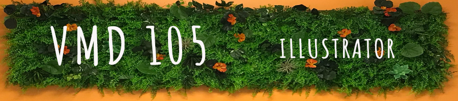

Adobe Illustrator

Vector Dark Humor
Illustrator is a vector based application, meaning it creates illustrated images using mathematical algorithms. Mostly used for drawing, it supports additions of pixel based images and text. I’ve always liked the image of the nekko cat, and used dark humor to create a vector based graphic saying goodbye to a challenging year.